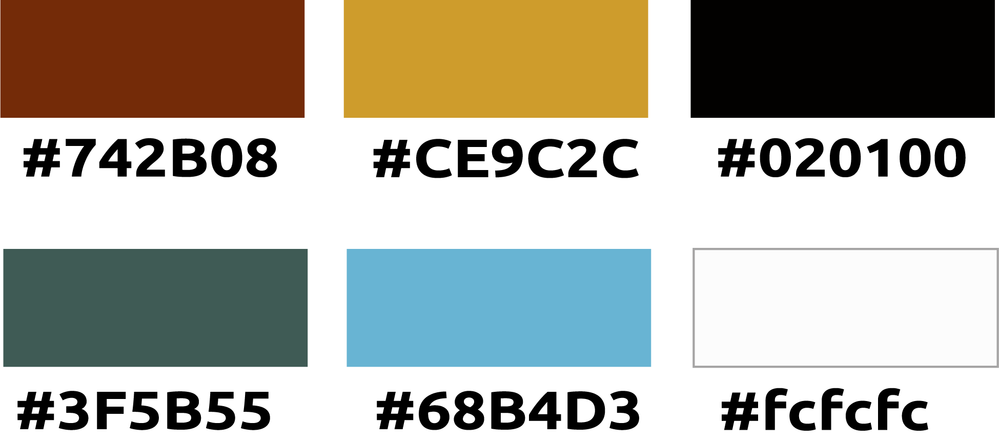
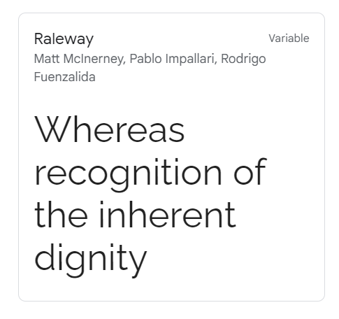

The website colors are inspired in the characteristics of Sonora state, a desertic ecosytem near to the sea and the logo is a representation of the sun, because Hermosillo the state's capital is known as the City of the Sun.

The website typefaces will be sans-serif to increase the readability, in specific Raleway.
